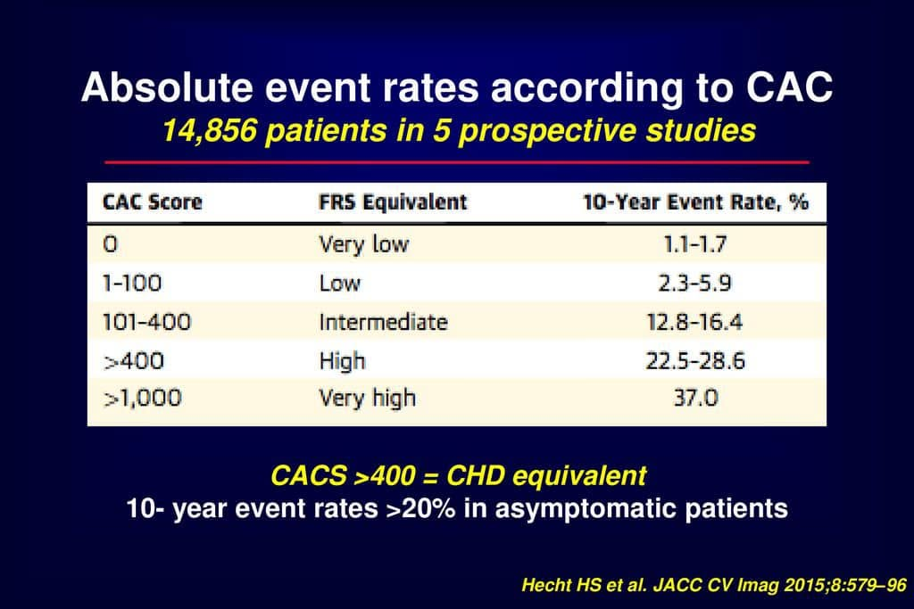

A cardiovascular risk calculator takes a few routine numbers, such as age, sex, blood pressure, cholesterol, smoking and diabetes status, and returns the chance of a heart attack or stroke over a set period. Doctors use the result to decide how aggressively to treat, for example whether to recommend a statin.12
The group's admins treat these tools as useful but incomplete. They are population estimates built from large groups of people, they cover only the factors fed into them, and they are designed for one situation: primary prevention, meaning people who have not yet had a heart attack or stroke.13 This summary covers how the older and newer calculators differ, what the group's posts say about their blind spots, and how to use them as a conversation starter instead of a verdict.
It is educational, not medical advice. The group's admins recommend discussing your own estimate and any treatment decision with your doctor.
What a risk calculator does
The AHA's PREVENT calculator is a clear example. A news piece Louis shared describes it as straightforward as long as you have your key health numbers handy: you enter sex, age, body mass index, blood pressure, cholesterol, smoking status and diabetes history, and it returns a 10-year and a 30-year percentage risk.1 Louis also notes that the latest version added kidney function (eGFR) as an input, and points out that kidney disease is a major risk factor for cardiovascular disease and dementia.6
The same article quotes Dr. Matthew Tomey: "By necessity, there's no risk calculator that incorporates every relevant variable." Factors it does not capture include coronary calcification or plaque, genetic risk, high lipoprotein(a), inflammation markers such as C-reactive protein, and most lifestyle factors like exercise and sleep. In practice doctors rarely rely on a single test, and experts describe the calculator as meant to inspire conversations with clinicians, not replace care.1
From the pooled cohort equations to PREVENT
What changed
For about a decade the standard tool in the United States was the Pooled Cohort Equations (PCEs), released in 2013 for non-Black Hispanic and White adults aged 40 to 79. In the AHA's description quoted by Louis, PREVENT is based on newer data from a larger, more diverse sample, covers all adults aged 30 to 79 without known cardiovascular disease, accounts for kidney and metabolic conditions, and gives 10- and 30-year chances of both atherosclerotic cardiovascular disease (ASCVD, the heart attack and stroke kind) and heart failure.3
| Pooled Cohort Equations | PREVENT | |
|---|---|---|
| Released | 20133 | newer; presented by the AHA in November5 |
| Ages covered | 40 to 793 | 30 to 793 |
| Who it was built for | non-Black Hispanic and White adults3 | all adults without known cardiovascular disease, from a larger, more diverse sample3 |
| Kidney and metabolic information | not described in the posts | included, with kidney function (eGFR) as an input36 |
| What it estimates | 10-year ASCVD risk, used in the CLAiR trial at a 7.5% threshold7 | 10- and 30-year risk of ASCVD and heart failure3 |
| Status in the 2026 ACC/AHA guideline | likely overestimated risk2 | recommended for primary prevention2 |
Louis shared a video in which Sadiya Khan, who led the working group that validated PREVENT, explains the calculator.8 He also noted a JAMA summary reporting that PREVENT accurately predicted cardiovascular disease, ASCVD and heart failure events in Asian and Hispanic patient groups.9
One strength is that PREVENT's 10-year estimates may predict more than clinical events. A study in the Journal of the American Heart Association, shared in the group, found they also predicted subclinical atherosclerosis (plaque with no symptoms yet) seen on imaging such as coronary calcium scans or carotid ultrasound.10
Now part of the guideline
According to Louis's summary of the 2026 ACC/AHA lipid guideline, PREVENT is now recommended for estimating primary prevention risk. The PREVENT-ASCVD equations are designed for adults aged 30 to 79 without known ASCVD or subclinical atherosclerosis and with LDL-C of 70 to 189 mg/dL, and estimate 10- and 30-year risk. The summary also notes that the old calculator likely overestimated risk, meaning more people were placed on cholesterol medication than necessary.2
The same guideline keeps LDL targets that scale with risk: below 100 mg/dL for borderline or intermediate risk, below 70 mg/dL for high risk, and below 55 mg/dL for people with ASCVD at very high risk.211 A second summary adds that a coronary calcium score above 300 now formally triggers the highest-risk category, whereas calcium had previously been treated as a softer risk enhancer.11
The debate over fewer statin candidates
Because PREVENT tends to produce lower estimates, the shift was controversial. A STAT report shared by Louis said the AHA's newer model could make as many as 40% fewer Americans candidates for cholesterol-lowering drugs than current calculators indicate, although guidelines had not yet been recalibrated at that time.5 A follow-up report cited a study estimating up to 107,000 more heart attacks and strokes over 10 years if millions lost eligibility for a statin or blood pressure drug. Louis called it "a complicated issue" and said expert panels would have to decide whether guidelines should change.12
Another study applying PREVENT to US adults aged 30 to 79 found nearly 3 in 10 had existing cardiovascular disease or an elevated 10-year predicted risk, over 90% among adults over 65, and about two-thirds of adults aged 30 to 59 without cardiovascular disease had an elevated 30-year risk.13

What risk tiers mean in practice
The group's summaries tie calculator output to treatment goals. The 2026 guideline summary states that risk tiers set LDL-C goals (under 100, 70 or 55 mg/dL as above) and that early lifestyle change and early medication, when recommended by a clinician, are a major focus.2
Louis offers a useful way to translate those numbers. Across dozens of randomized trials, every roughly 40 mg/dL drop in LDL cuts the relative risk of heart attack and stroke by about 20%. If your absolute 10-year risk is 20%, a 40 mg/dL drop brings it to about 16%. People who have already had an event are standing "closer to the edge," so the same relative drop protects them more, which is why their goals are often under 55 or even 40.14 A separate pooled summary of 25 statin trials through 2016 shows a LDL reduction of about 75 mg/dL went with about 40% lower major cardiovascular events on average, with larger relative reductions in the seven primary prevention trials.151617

What calculators leave out
Calcium scores
Calcium scoring is the most common add-on. Louis points to the MESA risk score calculator, which converts a coronary artery calcium (CAC) score plus other risk factors into a 10-year risk of heart attack or stroke, and to a chart for doing the same conversion.1819 A review referenced there describes CAC as the most robust predictor of coronary events in asymptomatic primary prevention, particularly for intermediate-risk people.19

The 2026 guideline summary recommends selective use of a CAC scan for men 40 and older and women 45 and older with borderline or intermediate risk when knowing the score would affect the decision to prescribe a statin. Any calcium supports an LDL goal under 100 mg/dL, with lower targets for higher amounts.2
But the picture is nuanced:
- A 2026 JAMA analysis found that adding CAC to PREVENT-ASCVD improved discrimination only modestly in adults aged 45 to 79, and in some groups not at all. Louis reads this as meaning the standard risk factors already capture much of what CAC reflects for the average person. The authors still support selective use in borderline to intermediate risk. Louis adds that once you know your calcium score is very high, you should assume you are at high risk "regardless of what the AHA calculator tells you."20
- Gokhan Can shared a point from Dr. Michael Weintraub that a CAC above 300 predicts events about as well as established ASCVD, so such patients could be treated as secondary prevention.21
- A skeptical post Louis shared cites two 2026 randomized trials: a Danish trial of 30,000 men screened with CAC found no reduction in death, heart attack or stroke at seven years and more serious bleeding, and the US CorCal Outcomes trial of nearly 6,000 people found identical event rates to calculator-guided care. It adds that the US Preventive Services Task Force does not recommend CAC for routine risk assessment in asymptomatic adults. Louis's own comment is that the scan is a wake-up call for some, but for the average person it does not seem to change outcomes.22
- Louis also shared a JAMA finding that, compared with risk scoring, coronary CT angiography was associated with modest improvements in healthy behaviors, acceptance of preventive therapy and risk factor modification, and commented that higher-risk people seem more motivated once they see their scan.23
Lp(a)
Adding lipoprotein(a), a genetically determined particle, did not improve PREVENT's accuracy in a model discussed in a JAMA Cardiology editorial, so Louis told members not to expect it in the calculator soon. The editorial still says measuring Lp(a) can personalize risk because it is a causal factor, and that many biomarkers are linked to events but fall short on improving prediction.2425
The 2026 guideline summary recommends measuring Lp(a) at least once in adulthood. A high level (125 nmol/L or 50 mg/dL or more) is associated with about a 1.4-fold increase in long-term heart attack or stroke risk, and 250 nmol/L with at least a two-fold increase. It says lifestyle minimally affects Lp(a), so repeat testing is generally not needed.2 Louis cites a review stating that each 50 mg/dL increase in Lp(a) corresponds to a hazard ratio of 1.16 for cardiovascular mortality in primary prevention, and works out an example of Lp(a) 250 mg/dL implying about 80% higher risk; he acknowledges this linear extrapolation is his own illustration.26
There is also a cautionary note on treatment. Louis says the HORIZON trial lowered Lp(a) massively but had no effect on major cardiovascular events, and argues that people taking a PCSK9 inhibitor on its own mainly to lower Lp(a) should revisit that choice, since statins, alone or with a PCSK9 inhibitor, have outcome evidence in people with high Lp(a).27
Inflammation, ApoB and other markers
The same guideline summary says ApoB may be used to assess residual risk in people with cardiovascular-kidney-metabolic syndrome, type 2 diabetes, high triglycerides or known cardiovascular disease who have already reached LDL-C and non-HDL-C goals.2 Gokhan's own baseline lab list for prevention also includes hs-CRP, Lp(a), ApoB, glucose markers and one imaging study.28
Inflammation is not in PREVENT, but a 2025 American College of Cardiology scientific statement summarized by Gokhan recommends universal hsCRP screening alongside cholesterol testing.2930 In the Women's Health Study, followed for 30 years, the top versus bottom quintile hazard ratios for major cardiovascular events were 1.70 for hs-CRP, 1.36 for LDL and 1.33 for Lp(a). Each added independent information, the combination predicted best, and the authors argue prevention should extend beyond 10-year estimates.31 In MESA, high Lp(a) carried no significant extra risk when hsCRP was below 2 mg/L, but with hsCRP of 2 or more, an Lp(a) of 50 to 99.9 mg/dL had a hazard ratio of 1.36 and 100 or more had 2.09.32 Louis cautions that participants were lower-risk people aged 62 on average.32
Not every blood marker earns a place. Louis says circulating oxidized LDL tests do not predict risk once ApoB is accounted for, because the oxidation that matters occurs inside the artery wall, which no commercial test measures.33
Where calculators can mislead
The 10-year window hides slow-building disease
Atherosclerosis takes decades to develop, while most calculators ask about the next 10 years. The REACT study in the New England Journal of Medicine examined 16,808 adults aged 18 to 70 in Denmark and Spain with ultrasound and coronary CT angiography. It found plaque in 8.7% of men and 6.7% of women aged 18 to 29, in 34.6% of men and 21.3% of women aged 30 to 39, and in 57% overall. By age 60 to 70, only 1.9% of men and 8.1% of women had no detectable plaque.4
Show data
| Men | Women | |
|---|---|---|
| Ages 18–29 | 8.7% | 6.7% |
| Ages 30–39 | 34.6% | 21.3% |
The same study found a high SCORE2 category (a European risk score) had only 1.9% sensitivity for silent atherosclerosis. The shared commentary says this does not make SCORE2 a poor tool, but shows that 10-year risk and the presence of disease are different things. Among 30- to 39-year-olds with plaque on CT angiography, 41.8% of men and 48.4% of women had a calcium score of zero, so a zero score does not necessarily mean no plaque. The authors' priority is to keep risk factors favorable throughout life.4
That is why the 30-year output matters for younger adults. The Women's Health Study authors argue for extending prevention beyond 10-year estimates.31 A modeling study Gokhan summarized found that starting lipid lowering at ages 40 to 49 in people with non-HDL cholesterol of 160 mg/dL or higher could cut projected 30-year risk from 17% to 6 to 12%, while waiting 10 to 20 years left 13 to 15%. Gokhan notes it did not quantify harms such as diabetes risk from statins.34
Risk factors are not the disease
A review Louis shared argues that many heart attacks occur in people who would never have qualified for aggressive prevention by conventional scores, while many people with several risk factors never have an event. Its argument is that imaging may allow a shift from risk-factor-based to disease-based prevention, noting that total plaque burden and non-calcified plaque often outperform stenosis (artery narrowing) for predicting events. Louis predicts coronary CT angiography will eventually become standard in preventive cardiology as cost and radiation fall, which is his prediction and not current practice.35
At the other extreme, a study of more than 9 million South Korean adults plus thousands of US adults found over 99% of people with a first heart attack, stroke or heart failure had at least one nonoptimal blood pressure, cholesterol, blood sugar or tobacco measure beforehand, with hypertension the most common.36 In other words, the inputs to a calculator are the right things to watch.
Outside the intended population
The calculators are for primary prevention only. Louis states that if you have already had a heart attack or stroke, have significant atherosclerosis or have a high calcium score, you fall into secondary prevention and the AHA calculator will underestimate your risk.13 The 2026 guideline summary likewise lists "without known ASCVD or subclinical atherosclerosis."2 Plaque on a scan can therefore move you out of calculator territory.
Louis's analysis of the Keto-CTA study shows one such case. Among lean, metabolically healthy people on a ketogenic diet with very high LDL (mean 254 mg/dL), total plaque volume rose 0.8% over one year, and those with a 10-year risk above 5% on the standard AHA calculator saw a 1.4% increase. People with zero plaque at baseline were unlikely to develop it within a year. Louis notes there was no low-LDL comparison group.3738 The journal page linked in that post is labeled "RETRACTED" in the group's link data, so treat these numbers cautiously.37
Relative versus absolute risk
Calculators report absolute risk, while trial headlines often report relative risk. Louis's worked example, a 20% relative reduction turning a 20% absolute risk into 16%, shows why the same drug or diet can matter more to a higher-risk person.14
Emerging tools
Louis highlights early research suggesting that AI analysis of retinal images could estimate cardiovascular risk. In the CLAiR randomized trial, almost a quarter of patients with no history of heart disease met guideline criteria for lipid lowering, using an algorithm trained against a 7.5% 10-year ASCVD risk from the pooled cohort equations. He describes the AI tools as still at a research stage.7
What this means for you
- If you have never had a heart attack or stroke, are aged 30 to 79 and know your numbers, the AHA PREVENT calculator is the tool the 2026 guideline summary points to.23
- Gather the inputs first: sex, age, BMI, blood pressure, cholesterol, smoking status, diabetes history and kidney function.16
- Look at both the 10-year and 30-year numbers, especially if you are young and a low 10-year number feels reassuring.14
- If you already have a known cardiovascular event, significant atherosclerosis or a high calcium score, expect the calculator to understate your risk and discuss secondary prevention with your doctor.321
- If your risk is borderline or intermediate, the guideline summary describes selective CAC testing, one-time Lp(a) testing and, in some conditions, ApoB testing as ways to refine it. The group's admins suggest discussing which, if any, fit your situation.2
- Remember that estimates guide treatment intensity, but outcomes depend on what you do afterward. Gokhan's index of key group posts includes "Rule number 1" for high-risk people: find a good cardiologist and listen to them.39
Frequently asked questions
Which calculator should I use?
For primary prevention in adults aged 30 to 79, the group's posts point to PREVENT, which the 2026 ACC/AHA guideline summary recommends and which replaces the 2013 pooled cohort equations.23 The REACT commentary also refers to SCORE2, a European risk score, so it is worth asking your doctor which tool is standard where you live.4
Why did my risk drop on the new calculator?
Reports shared in the group say PREVENT tends to produce lower risk estimates than the older tool, and the guideline summary says the old calculator likely overestimated. A STAT analysis suggested up to 40% fewer people might qualify for statins, while another study warned of possible additional events.2512
Does a calcium score of zero mean I am safe?
Not necessarily. In REACT, nearly half of adults in their 30s with plaque on CT angiography had a calcium score of zero, because early plaque can be non-calcified.4
Should I add Lp(a) or CAC to my risk estimate?
Neither improved the equations much on average, but they can still personalize risk. Lp(a) is a causal factor, and a very high CAC should be treated as high risk.2025
Are there other calculators in the group?
Yes. Louis shared a tape-measure visceral fat calculator from the Luxembourg Institute of Health and a method estimating visceral fat from waist minus thigh circumference. These estimate body fat distribution, not heart attack risk.4041